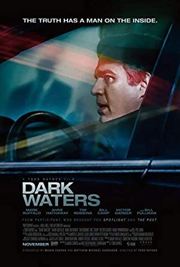

Una peli para COVID-19
Una peli por dia para no salir de casa

- Aguas oscuras
- Año de esteno: 2019
- Clasificacion: +7
- Elenco: Mark Ruffalo, Anne Hathaway, Tim Robbins
- Sinopsis: Un abogado defensor corporativo emprende una demanda ambiental contra una compañía química que expone una larga historia de contaminación